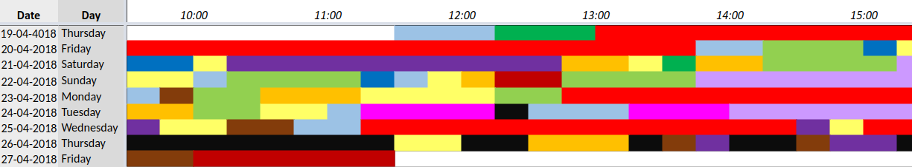

In Marxist scholarship, the worker’s internalization of the state of labor-relations is often figured by the image of feet marching, zombie-like, to work. What moves these feet, it's often asked.

But existential questions aside: thanks to the ’gamification’ of everyday life via biometrics and big data, we could find out the precise number of steps taken and perhaps spike the worker’s health care rate if he/she/they didn’t meet our prescribed target. The more information available to individuals, the better they are expected to be at policing themselves.

In the same token, the use of technology itself must be self-policed… As my friend Zak writes, “Platforms and devices are like drugs and food, and we style our technological ethos as one plans a diet; the conflation of ethics and consumption is a hallmark of neoliberal thinking.”
Prolific coder Michaël Trazzi offers his own “productivity hacks” in an article for the site Hackernoon. His tips include 1) Making a color-coded chart of how every fifteen minutes of your day is spent, with an extreme sense of horror vacui:
The Future Self's plight being only its outrage at the lollygagging indiscretions of a Past Self doesn't inspire much sympathy... Can forging a dissociative relation to a future version of oneself be a way to make a friend? To feel less lonely?

2)Putting your phone on mute and airplane mode, turning it off, and putting it in a sock within a sock within a sock within a sock and leaving it in your kitchen.
For someone as time-conscious as Michaël, we must assume there is signifigance to each step of the process- superstitiously muting the phone before turning it off, building it out to a soft tumescence, almost like a ritual of entombment, putting it in a 'clean' place, the kitchen, all to disgnate his device as a thing of filth. There is also the possibility that because Michaël only does things in 15-minute blocks, the multiple sock layers could be creating a time buffer, as well as a physical one.
On the subject of layers, obfuscation, and D.I.Y., a popular tactic on the Deepweb marketplace Dream Market is to sell, in lieu of tangible illegal items like drugs or dvds, a huge bundle of pdf guides to illegal activities for between 5 and 10 USD (around ฿0.001022- ฿0.002044).

The same user has listed multiple bundles, with names like ** BEST FRAUD PACKAGE ON THE DARK WEB ** each with a similar-sounding yet (as far as I could tell) distinct list of several hundred documents on VPN’s, hacking, fake ID’s, credit card fraud and a bit of astrology as well as scans of ID’s and official documents themselves…

One question is who would ever have enough time to implement even a fraction of these hundreds if not thousands of scams. Would they set up a productivity schedule like Michaël Trazzi and try a few different ones out each day? Another question is what this group of documents is even worth... on one hand it seems like paying $5 for what could earn potential millions is an incredible investment. On the other hand, when I started searching some of the documents that were listed specifically, every single one of them came up online for free on sites like coursehero.com. You can’t trust these scammers not to scam you… there's a reason they put a pyramid on the dollar bill.

From the free online scam documents I learned the old-fashioned black-hat (morally reprehensible) Search Engine Optimization technique of adding a bunch of unrelated text and tags in a white font on a white background to have your site come up more often in search results. >Hi Mom< (Highlight on your computer as invisible ink decoder.) Another tip was using public records to find out someone’s mother’s maiden name for a security question.
Another form of self-policing is the self-gifting phenomenon— subscription boxes which combines the excitement of opening a package with unknown contents, tailored to your interests by those who know you best with a reliable monthly/quarterly subscription model.

In his essay, “The Grace Machine : Of Turns, Wheels and Limbs”, Lars Spuybroek writes, “In the Maori gift culture on which Mauss based his studies, this power is identied as the hau, often translated as the ‘spirit of the gift’. What exactly, then, is this power, which he calls the ‘force of things’? For almost a century, this has posed serious problems in anthropology. Some have vehemently denied its existence; others have developed variations or allowed asymmetries and unilateralisms; and still others have categorized it as a form of ‘personhood’, an animist notion in which the donor’s personality – somehow – remains in the given object, causing it inevitably to return to its source. After the social and economic models, this adds a psychological explanation for gift-giving.”
How does the 'spirit of the gift’ perservere in this semi-simulated gift encounter, in which we are both donor and recipient, with the subscription service as proxy?
 The subscription boxes are also prescription boxes, and often tie in with various clinically diagnosed or self-diagnosed pathologies such as anxiety and AD/HD. (The former is treated via box primarily through sensuous distraction, the latter, through task assignments that demand focused attention).
The subscription boxes are also prescription boxes, and often tie in with various clinically diagnosed or self-diagnosed pathologies such as anxiety and AD/HD. (The former is treated via box primarily through sensuous distraction, the latter, through task assignments that demand focused attention).
There is something strange in a course of treatment that is also built on the principles of novelty and blind, contract-bound consumerism. The most cynical angle is that the promise to blindly, indefinitely oscillate between non-invasive treatments presupposes that there is no such thing as a cause or a cure.
The Freudian theory behind nervous tics is that they are unconscious mechanisms for dealing with a libidinal excess. 20th century theorist Georges Bataille took the sexual libido, not, like Freud, as the germ of all frustration, but as part of the greater over-exuberance that plagues all carbon-based life—a theory more metabolic than psychoanalytic in nature. Bataille also emphasized that in the past, the excess was diffused not on an individual level, but through orgiastic or destructive group activities. He advised first-world societies charitably diffuse their wealth or risk losing everything in a catastrophic upheaval. But charity can produce its own wastes… Take the sublimated form of crucifixion which lives on today as the “Duct Tape Fundraiser”.

The premise is that a principal or teacher stands on a chair, and students pay per strip of tape to fix them to the wall. At the very end the chair is removed so they hover a few inches above the floor. Their faces aren’t taped over with the sometimes-exception of their mouths.

Whether the appeal of the event rests more in see an authority figure publicly humiliated (in lieu of a flagpole wedgie) or the sheer feat of physics is anyone’s guess.

Based on the photos, it seems that there is also always more money, energy, enthusiasm and tape than would be purely necessary to attatch a person to the wall, and the person ends up like (like the sock) bloated and mummified as if ensured in the color-coded strands of a hyperproductive spider. There is literally an endless trove of these images, if you google it.
Unlike my other objects of critique, this is not an instance of self-policing, but a collective effort. However it is still undeniably a neoliberal phenomenon for public schools to be so underfunded, they have to resort to what at the very least looks like public torture in order to raise money.


(T-shirt features the entire text of Shirley Jackson’s The Lottery as a repeat graphic)